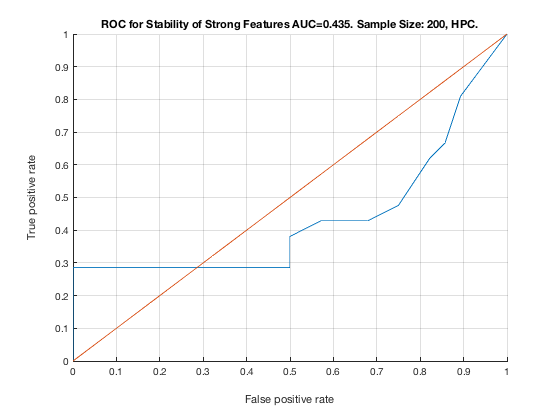

% TieNet. Sample Size: 200. HPC. unit_stability_type(200, 1, "TieNet")
Table 3. Stability by Type. Sample Size: 200, HPC.
___________________________________________________
SELECTED COUNTS: Strong:=21, Weak=24, Irrelevant=4
TOTAL COUNTS: Strong:=23, Weak=26, Irrelevant=4
Feature_Number Stability Type Path_Length N_MBS
______________ _________ ____________ ___________ _____
23 ' 0.386 ' ' STRONG ' 3 0
22 ' 0.254 ' ' STRONG ' 2 0
21 ' 0.228 ' ' STRONG ' 1 0
20 ' 0.054 ' ' STRONG ' 3 0
19 ' 0.044 ' ' STRONG ' 2 0
18 ' 0.040 ' ' STRONG ' 1 0
34 ' 0.038 ' ' weak ' 8 0
30 ' 0.036 ' ' weak ' 10 0
25 ' 0.034 ' ' weak ' 6 0
40 ' 0.030 ' ' weak ' 3 0
37 ' 0.028 ' ' weak ' 6 0
24 ' 0.026 ' ' weak ' 4 0
28 ' 0.026 ' ' weak ' 5 0
43 ' 0.026 ' 'irrelevant' Inf 0
47 ' 0.026 ' 'irrelevant' Inf 0
31 ' 0.024 ' ' weak ' 9 0
44 ' 0.024 ' 'irrelevant' Inf 0
48 ' 0.024 ' ' weak ' 6 0
27 ' 0.022 ' ' weak ' 6 0
29 ' 0.020 ' ' weak ' 11 0
7 ' 0.018 ' ' STRONG ' 1 0
11 ' 0.018 ' ' STRONG ' 4 0
1 ' 0.016 ' ' STRONG ' 1 0
35 ' 0.016 ' ' weak ' 7 0
51 ' 0.016 ' ' weak ' 4 0
46 ' 0.014 ' ' weak ' 7 0
42 ' 0.012 ' 'irrelevant' Inf 0
50 ' 0.012 ' ' weak ' 5 0
5 ' 0.010 ' ' STRONG ' 3 0
38 ' 0.010 ' ' weak ' 5 0
41 ' 0.010 ' ' weak ' 3 0
4 ' 0.008 ' ' STRONG ' 4 0
8 ' 0.008 ' ' STRONG ' 2 0
10 ' 0.008 ' ' STRONG ' 4 0
45 ' 0.008 ' ' weak ' 7 0
49 ' 0.008 ' ' weak ' 6 0
14 ' 0.006 ' ' STRONG ' 3 108
39 ' 0.006 ' ' weak ' 4 108
6 ' 0.004 ' ' STRONG ' 3 144
9 ' 0.004 ' ' STRONG ' 3 180
12 ' 0.004 ' ' STRONG ' 1 360
26 ' 0.004 ' ' weak ' 5 360
2 ' 0.002 ' ' STRONG ' 2 450
3 ' 0.002 ' ' STRONG ' 4 540
15 ' 0.002 ' ' STRONG ' 3 810
17 ' 0.002 ' ' STRONG ' 4 1080
32 ' 0.002 ' ' weak ' 8 1080
33 ' 0.002 ' ' weak ' 8 1080
52 ' 0.002 ' ' weak ' 4 1080
Figure 3. ROC for Stability of Strong Features AUC=0.435. Sample Size: 200, HPC.
_________________________________________________________________________________
